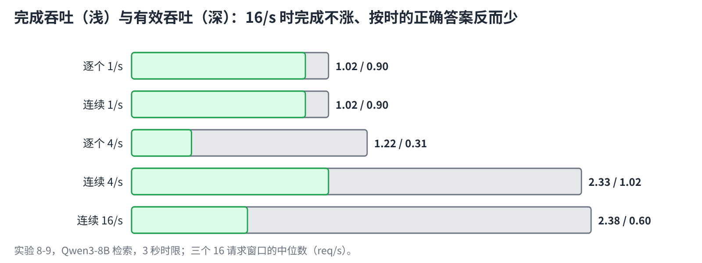
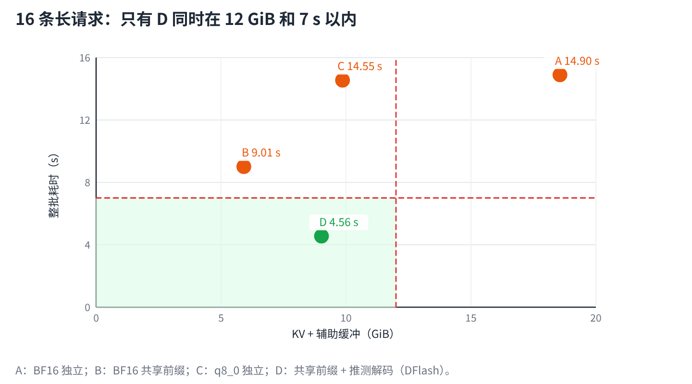
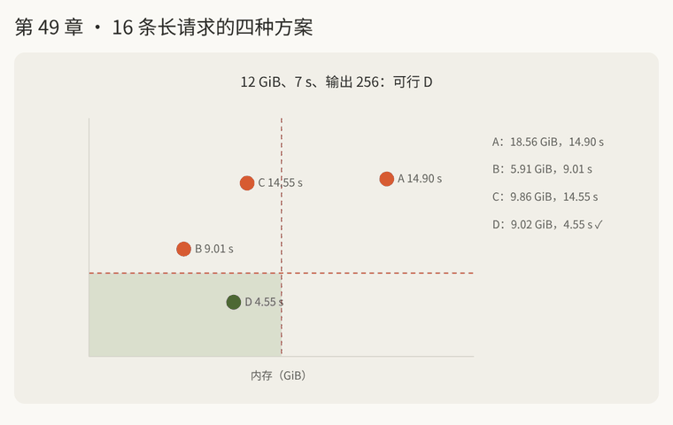

第 49 章 · 请求负载下的性能与配置选择：数正确且按时的答案
本地运行
git clone https://github.com/wikieden/ai-infra-from-constraints
cd ai-infra-from-constraints/code/notebooks
pip install jupyterlab torch numpy
jupyter lab ch49_serving_choice.ipynb也可以下载后直接用 VS Code 打开 .ipynb 运行。需要 GPU 的章节在 Colab 里选「代码执行程序 → 更改运行时类型 → GPU」。
本章回答：系统里平均同时有多少条请求？完成吞吐涨了，为什么正确且按时的答案反而少了？一轮 decode 只读 8.6 ms 的数据，为什么要 26 ms？16 条长请求同时到达，共享前缀、压缩 KV、推测解码选哪个？decode 快了 4 倍，整个 Agent 任务快多少？
讲解日期：2026-11-24 · 上一章：第 48 章 推测解码 · 下一章：第 50 章 计算与状态的分布方式
对应原文：materials/ai-infra-book/manuscripts/08-推理优化.md§8.6 L594–L710（图 8-33 到 8-36）、历史与延伸阅读
本章缩写：goodput = 有效吞吐（只数正确且按期完成的请求）· MBU = Memory Bandwidth Utilization（内存 / 带宽 / 利用率）· MFU = Model FLOPs Utilization（模型 / 浮点运算 / 利用率）。全部缩写见 缩写与术语表
讲解
第一步：到达、排队、准入、取消（2026-11-24）
类比：医院候诊厅。 每小时来 4 个病人、每人平均待半小时，厅里平均就有 2 个人；待得久了，厅里的人就多了，座位（KV）就不够了。
原文 L598–L612：Little 定律
每秒到 4 条、平均停留 0.5 s，系统内平均 2 条；停留 2 s 时 8 条。这些请求有的在排队，有的在算，有的只保留状态（等工具返回）。处理速度跟不上到达率，队列就累积。
- 准入控制：接收前先查 KV 空间和离截止还剩多久。第 44 章的短请求已用掉 6.95 s，再排 0.1 s 就超时：提前拒绝、转给别的实例或换更快的配置。
- 取消：请求失去价值就停止安排，等加速器操作完成再释放空间。
一句话：系统内的请求数 = 到达率 × 停留时间；容量和准入都按它算。
第二步：有效吞吐：只数正确且按时（2026-11-24）
类比：快递公司的考核。 不是数送了多少件，而是数准时、没送错的件数；送得多但都迟到，等于白送。
原文 L616–L638：
Qwen3-8B 检索实验，3 秒时限：336 次回答，294 次正确，只有 155 次正确且按时。
| 策略、到达率 | 完成吞吐 | 有效吞吐 |
|---|---|---|
| 逐个接纳 1/s | 约 0.90 req/s | |
| 逐个接纳 4/s | 1.22 | 0.31（大量正确但迟到） |
| 连续批处理 4/s | 2.33 | 1.02 |
| 连续批处理 16/s | 2.38 | 0.60（−41%） |

图 49-1 · 16/s 时完成吞吐已经不涨，更多请求只是加长排队。
计时要从请求原定的到达时刻算，引擎外的等待也要计入。选配置时先找有效吞吐开始下降的到达率，再限制接收。
一句话：完成吞吐和有效吞吐的差额，就是花在错误或迟到答案上的处理能力。
第三步：把实测换成处理速度（2026-11-24）
类比：车的油耗说明。 理论上一箱油跑 800 公里，实际每次起步、等红灯都耗油；把实测油耗记下来，下一次规划路线才准。
原文 L642–L660：一条请求占用的 GPU 时间
实验 8-1（RTX PRO 6000、2K、无共享前缀、关闭 CUDA Graph）：
| batch | 每轮读取 | 按 1792 GB/s 下界 | 实测一轮 | MBU | prefill MFU |
|---|---|---|---|---|---|
| 1 | 15.44 GB | 8.62 ms | 26.26 ms | 33% | 62% |
| 4 | 16.34 GB | 9.12 ms | 26.62 ms | 34% | 61% |
| 16 | 19.97 GB | 11.14 ms | 27.44 ms | 41% | 61% |
| 64 | 34.46 GB | 19.23 ms | 29.63 ms | 65% | 58% |
batch 1 时一轮比读取下界多约 17.6 ms，而且几乎不随读取量变：这是逐个提交 kernel、主机调度和同步的开销（第 29 章 CUDA Graph、vLLM v0.6.0 能去掉的那部分），不是模型漏项。
一句话：先用实测效率把规格换成实际速度；decode 的效率随 batch 升，是固定开销被摊薄了。
第四步：16 条长请求，选哪个方案（2026-11-24）
类比：搬家公司报价。 先看车装不装得下（内存），再看能不能按时到（时限），最后在都能做的里面挑最便宜的。
原文 L662–L693：16 条 8K 长请求同时到达，前 6144 token 相同，输出 256，KV 预留 12 GiB，时限 7 s：
| 方案 | 内存 | 首 token 前（整批 prefill） | 之后 | 总耗时 | 可行？ |
|---|---|---|---|---|---|
| A：BF16，独立 | 18.56 GiB | 7.34 s | 255 轮 × 29.63 ms | 14.90 s | 内存不够 |
| B：BF16，共享前缀 | 5.91 GiB | 2.04 s | 255 轮 × 27.35 ms | 9.01 s | 超时 |
| C：q8_0，独立 | 9.86 GiB | 7.34 s | 255 轮 × 28.26 ms | 14.55 s | 超时 |
| D：共享前缀 + 推测（DFlash） | 9.02 GiB | 2.23 s | 85 轮 × 27.35 ms，每轮 3 个 | 4.56 s | ✓ |

图 49-2 · 只有 D 同时落在两条线内。
- B 只计生成就要 255 × 27.35 ms = 6.97 s：这张卡上一轮 decode 时间几乎不随 batch 和上下文变化，只有减少轮数才能明显缩短生成。
- C 的一轮按读取 25.40 GB 在表中插值约 28.26 ms，还没算转换时间；丢掉前缀共享，prefill 从 2.04 涨到 7.34 s。
- D 每个合格结果 \(4.56/16 \approx 0.285\) GPU s，按 600 W 不超过约 171 J；B 用了 9.01 s，一个合格结果都没有。
- 条件一变选择就变：KV 只留 6 GiB，D 放不下、B 超时，没有可行方案；输出只要 16 个，B 2.45 s、D 2.37 s，几乎一样。
完整任务的 Amdahl（原文 L695–L705）：
decode 占 50%、快 4 倍：100 → 62.5 s（1.6 倍）；占 20%：100 → 85 s（1.18 倍）。实验 8-9 测能耗：连续批处理 1 / 4 / 16 req/s 每个合格结果 615 / 652 / 1084 J，逐个接纳 4/s 1982 J；错误或迟到的答案已经耗掉的能量也要算进成本。
场景代码：一个最小的有效吞吐统计（真实写法）：
def goodput(records, deadline_s, window_s):
"""records: [(到达时刻, 完成时刻, 是否正确)]，时间从原定到达算起。"""
ok = sum(1 for t_arr, t_done, correct in records if correct and t_done - t_arr <= deadline_s)
return ok / window_s
一句话：先按内存、再按时限排除，最后按每个合格结果的 GPU 时间和能耗选；局部加速要放回整个任务。
动画演示：16 条长请求的四种方案

可交互版：animations/49-serving-choice.html（滑块：KV 预留 4–24 GiB；时限 2–16 s；输出长度 16–512）。
怎么看：
- 平面上四个点是 A、B、C、D：横轴内存、纵轴总耗时（第四步）；
- 两条虚线是内存上限和时限，左下阴影是可行区；
- 右边列出每个方案的内存、总耗时和是否可行；
- 播放：12 GiB / 7 s（只有 D）→ 6 GiB（无解）→ 输出 16 个（B、D 都行）→ 时限 10 s。
练习与作答记录
题 1（第一步）：每秒到达 6 条请求，平均停留 1.5 s。系统内平均几条？每条 KV 1.2 GiB 时要多少 GiB？
作答记录：（待作答）
题 2（第三步）：prefill 速度 12,000 token/s、decode 速度 400 调用/s。一条请求输入 4096 新 token、输出 512 个，占多少 GPU 秒？
作答记录：（待作答）
题 3（第四步）：一个任务 120 s：prefill 15 s、decode 45 s、工具与等待 60 s。decode 快 3 倍、多 5 s 准备，任务多久？准备多长时就不再省时间？
作答记录：（待作答）
原书练习 8-8、8-9（L707、L709）。想多练可以做。
口诀
候诊厅人数 = 来的速度 × 待的时间；
快递考核只数准时没送错的；送得多都迟到等于白送；
实测油耗才算得准，起步红灯是固定开销；
先看装得下，再看到得了，最后挑最省；decode 快四倍，任务只快一点几。
本章复习卡片
I169（Little 定律 \(\bar n = \lambda\bar T\) 与准入、取消）、I170（有效吞吐只数正确且按时：336 / 294 / 155；4/s vs 16/s；MBU 33 → 65% 与固定开销）、I171（16 条长请求 A / B / C / D：只有共享 + 推测在 12 GiB、7 s 内，4.56 s；Amdahl 1.6 / 1.18）。练习做完后，按答错、卡住的地方再补。
附录 · 延伸阅读
留给以后深入学习用，不影响本章主线。★ 是建议先读的。
推荐阅读
| 读什么 | 读哪里 | 读它为了什么 |
|---|---|---|
| ★ AII 第 8 章 | §8.6 L594–L710、历史与延伸阅读 | 本章原文 |
| Zhong 等，DistServe（OSDI 2024） | goodput 定义 | 有效吞吐的来源 |
| 第 14 章 从单次请求到持续到达的负载 | 排队与积压 | 前置 |
| 第 29 章 运行时 | CUDA Graph、vLLM v0.6.0 | 去掉固定开销 |
| 第 30 章 从局部优化到完整请求 | Amdahl | 同一个方法 |
| AII 第 9 章 | 分布式推理 | 实例划分与服务规模的下文 |
数学原理
- Little 定律：长期平均 \(\bar n = \lambda \bar T\)，与分布无关。
- 插值：两点之间按读取量线性插值步时间。
- 约束筛选：可行集 = 内存约束 ∩ 时限约束。
公式清单
| 公式 | 意思 |
|---|---|
| \(\bar n = \lambda\bar T\) | Little 定律 |
| \(R_{\mathrm{good}} = \sum Q_i D_i / T_{\mathrm{obs}}\) | 有效吞吐 |
| \(t_{\mathrm{GPU}} = L/r_P + (G - 1)/r_D\) | 一条请求的 GPU 时间 |
| \(T = T_{\mathrm{prefill}} + \text{轮数} \times T_{\mathrm{step}}\) | 整批耗时 |
| \(S_{\mathrm{task}} = 1/((1 - f) + f/s)\) | 任务级加速 |
代码对照：把本章的数字用代码算一遍
代码
ai-infra/solutions/chapter-code/ch49_serving_choice.py，测试tests/test_ch49.py：
bash cd ai-infra/solutions/chapter-code uv run python ch49_serving_choice.py uv run pytest tests/test_ch49.py
| 讲义 | 写法 | 跑出来 |
|---|---|---|
| 第三步 | mbu(b)、gpu_seconds(...) |
33 / 34 / 41 / 65%；0.563 GPU s |
| 第四步 | plan_time(k)、interp_step(25.40) |
14.90 / 9.01 / 14.55 / 4.55 s；28.26 ms |
| 第四步 | amdahl(f, 4) |
1.6 / 1.18 |
代码里才看得到的 3 件事：
- D 代码得 4.55 s，原文写 4.56 s：2.23 + 85 × 27.35 ms = 4.5548。
- A 的内存 16 × 1188 MiB = 18.56 GiB，按 12 GiB 直接排除，表里的时间只是"放得下时要多久"。
- 测试里用"内存 ≤ 12 GiB 且时间 ≤ 7 s"筛选，结果只剩 D。
自己改一改（不影响练习答案）：
- 加方案 E：共享前缀 + 从上下文查找草稿，每轮 2 个、128 轮、每轮多 0.1 ms，算它的位置。
- 把
PLANS的步时间改成开启 CUDA Graph 后的值（假设固定开销减半），重新选。 - 用
goodput写一个到达率扫描，找有效吞吐开始下降的点。